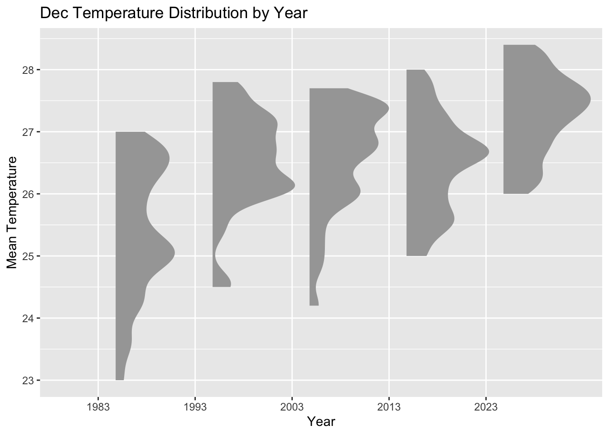
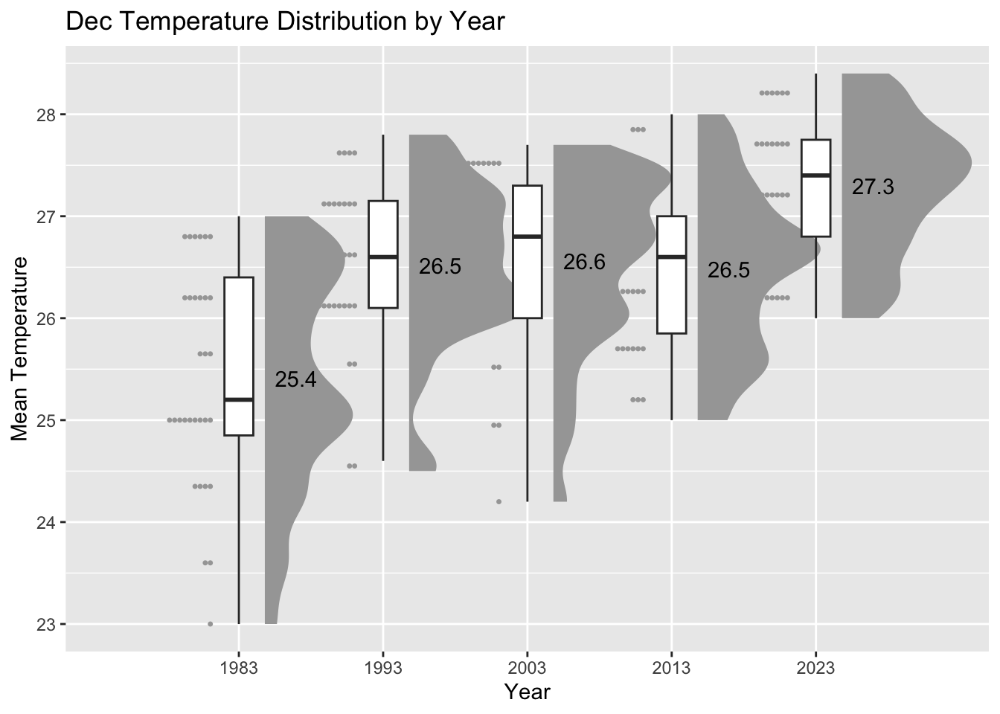

pacman::p_load(tidyverse, ggrepel, patchwork,
ggthemes, hrbrthemes,
tidyverse, ggdist, ggridges, colorspace)take home exercise 3
Background
As we know Singapore is situated near the equator and it has a typically tropical climate. It has 2 two monsoon seasons, one is Northeast Monsoon(December to early March); the other is Southwest Monsoon(une to September). In this task, we will choose December to analysis the temperature variation.
Purpose
Daily mean temperatures are projected to increase by 1.4 to 4.6, while annual mean temperatures rose at an average rate of 0.25 per decade. We want to find out the reasons.
Import data
I choose the Changi station, December 1983, 1993, 2003, 2013, 2023’ temperature data by grouping the data manually. R can not read the degree, so I move it out.
TEMData <- read_csv("data/DEC1983-2023TEM.csv") glimpse(TEMData)Rows: 155
Columns: 10
$ Station <chr> "Changi", "Changi", "Changi", "Changi", "C…
$ Year <dbl> 1983, 1983, 1983, 1983, 1983, 1983, 1983, …
$ Month <dbl> 12, 12, 12, 12, 12, 12, 12, 12, 12, 12, 12…
$ Day <dbl> 1, 2, 3, 4, 5, 6, 7, 8, 9, 10, 11, 12, 13,…
$ `Daily Rainfall Total (mm)` <dbl> 2.8, 1.7, 5.0, 8.2, 0.0, 0.0, 0.0, 19.8, 4…
$ `Mean Temperature` <dbl> 26.4, 24.3, 25.1, 25.2, 26.0, 25.0, 25.6, …
$ `Maximum Temperature` <dbl> 31.0, 27.2, 30.2, 30.3, 29.8, 27.7, 28.8, …
$ `Minimum Temperature` <dbl> 23.8, 21.9, 23.2, 23.0, 23.0, 23.7, 23.4, …
$ `Mean Wind Speed (km/h)` <dbl> 9.1, 4.9, 3.1, 3.2, 4.5, 4.4, 4.9, 5.4, 6.…
$ `Max Wind Speed (km/h)` <dbl> 46.1, 36.4, 41.0, 31.7, 28.8, 32.4, 32.8, …Data descripition
Ridgeline plot(also known as Joyplot) is a method to display the distribution of a numeric value for several groups. We use this method to display the December of 1983, 1993, 2003, 2013, 2023’s daily mean temperature.
ggplot(data = TEMData,
aes(x = `Mean Temperature`, y = as.factor(Year),
fill = after_stat(x))) +
geom_density_ridges_gradient(
scale = 3,
rel_min_height = 0.01) +
scale_fill_viridis_c(name = "TEMP",
option = "C") +
scale_x_continuous(
name = "Mean Temperature",
expand = c(0, 0)
) +
scale_y_discrete(
expand = expansion(add = c(0.2, 2.6))
) +
theme_ridges() +
labs(title = "Dec Temperature Distribution by Year",
y = "Year")ggplot(TEMData,
aes(x = `Mean Temperature`, y = as.factor(Year),
fill = 0.5 - abs(0.5-stat(ecdf)))) +
stat_density_ridges(geom = "density_ridges_gradient",
calc_ecdf = TRUE) +
scale_fill_viridis_c(name = "Tail probability",
direction = -1) +
theme_ridges()+
labs(title = "Dec Temperature Distribution by Year",
y = "Year")ggplot(TEMData,
aes(x = `Mean Temperature`, y = as.factor(Year),
fill = factor(stat(quantile))
)) +
stat_density_ridges(
geom = "density_ridges_gradient",
calc_ecdf = TRUE,
quantiles = 4,
quantile_lines = TRUE) +
scale_fill_viridis_d(name = "Quartiles") +
theme_ridges() +
labs(title = "Dec Temperature Distribution by Year",
y = "Year")ggplot(TEMData,
aes(x = `Mean Temperature`, y = as.factor(Year),
fill = factor(stat(quantile))
)) +
stat_density_ridges(
geom = "density_ridges_gradient",
calc_ecdf = TRUE,
quantiles = c(0.025, 0.975)
) +
scale_fill_manual(
name = "Probability",
values = c("#FF0000A0", "#A0A0A0A0", "#0000FFA0"),
labels = c("(0, 0.025]", "(0.025, 0.975]", "(0.975, 1]")
) +
theme_ridges()+
labs(title = "Dec Temperature Distribution by Year",
y = "Year")ggplot(TEMData,
aes(x = as.factor(Year), y = `Mean Temperature`)) +
stat_halfeye(adjust = 0.5,
justification = -0.2,
.width = 0,
point_colour = NA) +
labs(title = "Dec Temperature Distribution by Year",
x = "Year")
ggplot(TEMData,
aes(x = as.factor(Year), y = `Mean Temperature`)) +
stat_halfeye(adjust = 0.5,
justification = -0.2,
.width = 0,
point_colour = NA) +
geom_boxplot(width = .20,
outlier.shape = NA) +
labs(title = "Dec Temperature Distribution by Year",
x = "Year")ggplot(TEMData,
aes(x = as.factor(Year), y = `Mean Temperature`)) +
stat_halfeye(adjust = 0.5,
justification = -0.2,
.width = 0,
point_colour = NA) +
geom_boxplot(width = .20,
outlier.shape = NA) +
stat_dots(side = "left",
justification = 1.2,
binwidth = .5,
dotsize = 0.1)+
labs(title = "Dec Temperature Distribution by Year",
x = "Year")
ggplot(TEMData,
aes(x = as.factor(Year), y = `Mean Temperature`)) +
stat_halfeye(adjust = 0.5,
justification = -0.2,
.width = 0,
point_colour = NA) +
geom_boxplot(width = .20,
outlier.shape = NA) +
stat_dots(side = "left",
justification = 1.2,
binwidth = .5,
dotsize = 0.1) +
coord_flip() +
theme_economist()+
labs(title = "Dec Temperature Distribution by Year",
x = "Year")